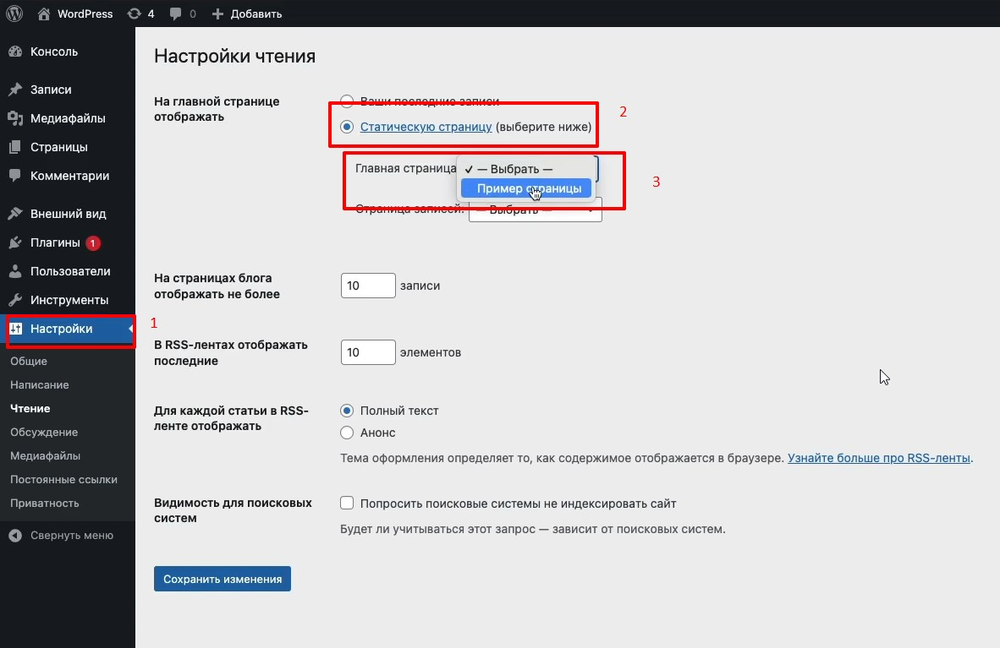
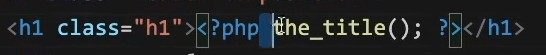
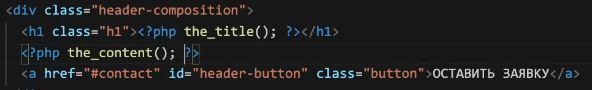

В панели Wordpress зходим в Настройки - далее выбираем радиокнопку Статическая страница - и из выпадающего списка выбираем созданную в разделе Страницы страницу
Переходим в раздел Страницы и открываем выбранную только что страницу.
Меняем заголовок нашей страницы, и меняем в контенте описание
Теперь что бы отобразить на странице в верстке динамический заголовок, используем функцию the_title()
Что бы вывести то что мы написали в контенте страницы, мы используем функцию the_content()
